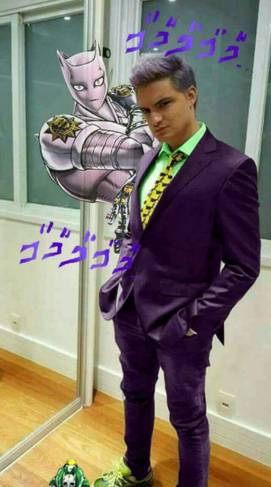
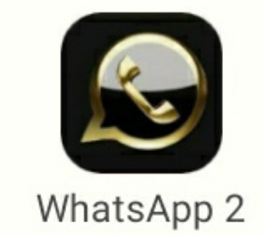

Minecraft é banido de todos países por ser muito violento.
Após várias denuncias, Minecraft perde todos seus patrocinios e são forçados a apagar o jogo de todas as redes-sociais por conta de sua violência extrema contra animais como: Vacas, Porcos, Galinhas, entre mais.

Riot Games perde milhões por conta de um cosplay
Essa semana um jovem de 18 anos saiu pelas ruas batendo em pessoas com uma vassora dizendo ser mono Master Yi, Riot Games leva diversas denuncias e perdem milhões de doláres, sendo forçados a banirem o campeão de League of Legends.

Youtuber após pintar o cabelo 70 vezes por seus inscritos ganhou uma stand de jojo
Felipe Neto tendo em seu canal mais de 47 milhões de inscritos, vivia pintando seu cabelo, até o dia em que Felipe levantou da cama e havia notado algo diferente, ele havia desbloqueado uma stand de Jojo Bizarre Adventures.

Whatsapp 2 é confirmado
Segundo Jan Koum(Criador do Whatsapp) Brian Acton roubou o projeto e criou um novo aplicativo, denominado Whatsapp 2, e será lançado esse mês de Fevereiro - 2022.
Dono de bar espanca 22 ladrões e é preso por agressão
Esse jovem se chama diluc, mas não se engane por sua aparência, ele dono de um bar e fez coisas terríveis, como por exemplo mautratar criaturas da floresta que pretendiam atear fogo em seu bar.